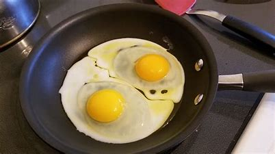

How To
Foods!
Eggs

Ingredients
- Stove pan
- Spatula
- Cooking oil/cooking spray(preferably non-stick)
- Eggs
Steps
- Put your pan on your stove and light on medium heat.
- Use your cooking spray on the pan, thoroughly spraying the pan so the eggs don't stick to the inside.
- Take your egg/eggs and crack over the pan, so that the insides fall into the pan.
- Wait a few minutes, checking the eggs to see if they need flipped. Once ready, flip the eggs.
- Once both sides are cooked, turn the stove off and put the eggs onto your plate, and enjoy!